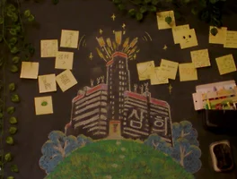

매거진 삼삼오오 · 프리뷰
삼희 : The Adventure of 3 Joys
응원과 위로

응원과 위로
난도 높은 수중 촬영. 조연출과 연출이 실랑이를 벌인다. 물을 무서워하는 배우는 주저하다 연기에 임한다. 어떤 심정이었을지 상상이 가지 않을 만큼 힘든 시간이 흐른다. 같은 일상도 누군가에겐 가볍고 누군가에겐 버겁다.
영화는 상처를 겪은 이가 일상을 마주하고, 자신만의 방식으로 한 걸음씩 앞으로 나아가는 과정을 그린다. 지인과 만남에서 건네받은 작은 인형, 직거래 중 만난 뜻밖의 인연과 그가 건넨 ‘파이팅’ 하는 끝인사. 뜻하진 않았지만 건네받게 되는 크고 작은 ‘파이팅’ 들이 모여 혜림의 찬 공기를 데우기 시작한다. 혜림이 자신을 조금씩 앞으로 밀어내고 있다. 스스로. 상처를 정면으로 응시하면 또다시 피하고 싶지만 계속해서 마주한다. 아프지만 들춰내고 결국에는 뛰어든다. 그 과정을 지켜보는 것만으로도 훈훈해진다. 지나칠 법한 주변이 온통 나를 응원하는 것처럼 느껴져 한 번 더 돌아보게 만든다. 혜림을 응원하다가도 위로를 받는다. 응원하면 위로를 받는 것일까. 파이팅! 하면 너도 파이팅이야! 하면서 맞받아칠 여유가 생기길 바라는 것만 같다.
- 오오극장 관객프로그래머 신경철